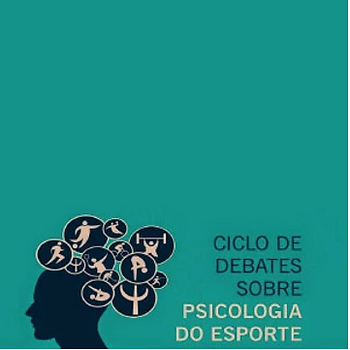

O Ciclo Estadual de Debates, “Diálogos sobre Psicologia do Esporte”, é uma iniciativa inovadora do Conselho Regional de Psicologia do Estado de São Paulo (CRPSP) que propõe discutir as diretrizes as referências para o exercício profissional, assim como, orientar, refletir e posicionar, por meio da ética profissional, a práxis do psicólogo do e no esporte em diversos contextos.
Os debates, que podem servir como ações disparadoras para os demais CRPs e suas subsedes espalhados pelo Brasil, ajuda na divulgação dessa especialidade da psicologia. Os encontros carregam questões emergências da área, sempre no âmbito de orientar os psicólogos envolvidos na pratica esportiva competitiva ou não.
Não deixe de agendar sua participação neste ultimo encontro do ano, dia 07 de dezembro, acessando o site do Conselho Regional de Psicologia de São Paulo (clique aqui) .
IV Encontro
Mesa redonda: Dialogando sobre a atuação da (o) psicóloga (o) do esporte no Paraesporte: Garantia de DH e saúde mental.
Segunda-feira, 07 de dezembro de 2015
Horário: 19h00 às 22h00
Rua Arruda Alvim, 89 Jardim América – SP
Entrada gratuita.
Ou assista via web a transmissão
E para você que não conhece trabalho, assista aos vídeos dos encontros anteriores.
III Encontro: Mesa redonda: Dialogando sobre formação em Psicologia do Esporte no Estado de SP.
I Encontro: Mesa redonda: Dialogando sobre: Psicologia, Ética, mídia e comunicação. Data: 09/03/15 – ACESSE O VÍDEO
II Encontro: Mesa redonda: Psicologia do Esporte e práticas integrativas e complementares. Sobre o que estamos falando? ACESSE O VIDEO